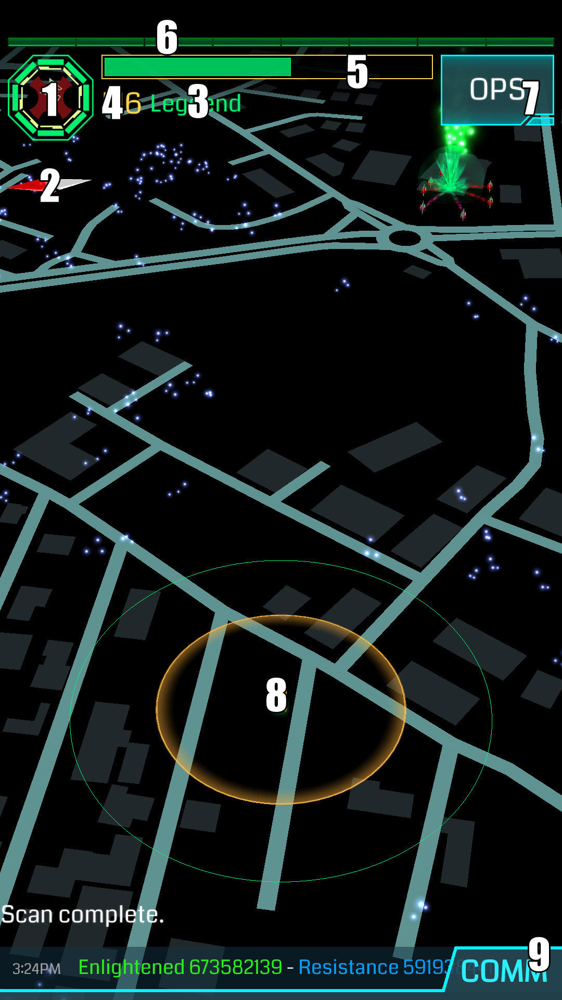
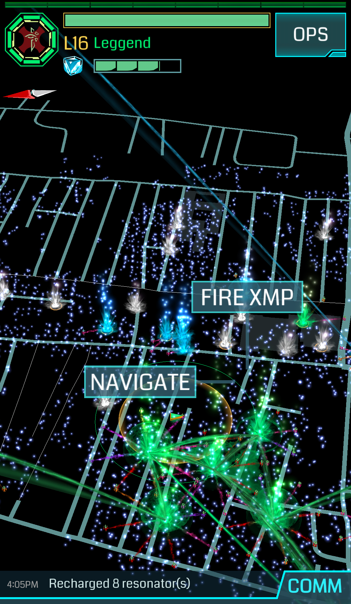
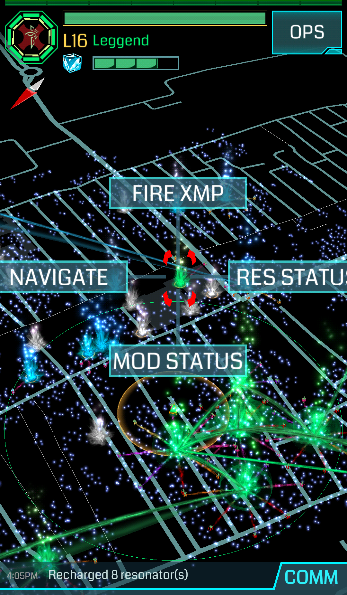
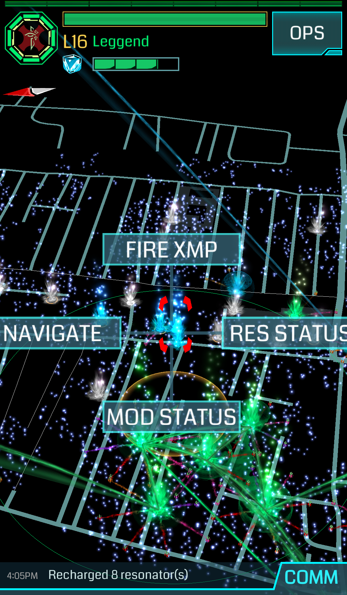

- Avatar del giocatore: circondato da 16 “tacchette” che si riempiono con l’aumentare del livello (al momento 16 livelli al massimo). Tocca l’avatar per aprire la schermata per modificarlo.
- Bussola digitale: clicca su di essa e ruota il telefono, vedrai che la mappa ruota seguendo la rotazione del telefono! Per disattivarla premi nuovamente la bussola.
- Codename: Nome identificativo dell’agente che sta giocando.
- Livello
- Barra dell’XM: (Exotic Matter) energia che permette di compiere azioni di gioco, clicca sulla barra per vedere quanta XM hai (tappando sulla barra XM appaiono i valori numerici "XM" e "AP").
- Barra AP: (Action point): barra progressiva che indica lo stato di avanzamento per il raggiungimento del prossimo livello.
- Tasto OPS
- Cursore di direzione: indica l’orientamento e la posizione del giocatore circondato da un cerchio arancione (40m di raggio) che indica il range d’azione, sono inoltre visibili i portali, i link, i field ed eventuali oggetti presenti a terra. Tappando sul cursore, la mappa si orienta a nord.
- COMM: la chat di Ingress.
Tenendo premuto il dito sullo Scanner su un punto privo di portali:

- In alto “FIRE XMP” la prima XMP ad essere usata sarà dello stesso livello dell’ultima utilizzata
- A sinistra “NAVIGATE” per rendere visibile dallo Scanner la distanza a cui si trova il punto selezionato
Tenendo premuto il dito sullo scanner su un portale alleato

- In alto “FIRE XMP” apre il menu per utilizzare XMP e Ultra strike guarda nel dettaglio la sezione
- A destra “RES STATUS” serve a verificare lo stato dei risonatori, nel caso in cui un ottano dovesse risultare vuoto, sarà possibile deploiare nuovi risonatori
- In basso “MOD STATUS” serve a verificare i mod installati sul portale, sarà possibile installare i propri (solo 2 mod per giocatare/per portale)
- A sinistra “NAVIGATE” per rendere visibile dallo Scanner la distanza a cui si trova il portale
Tenendo premuto il dito sullo Scanner su un portale nemico

- In alto “FIRE XMP” la prima XMP ad essere usata sarà dello stesso livello dell’ultima utilizzata
- A destra “RES STATUS” serve a verificare lo stato dei risonatori
- In basso “MOD STATUS” serve a verificare i mod installati sul portale
- A sinistra “HACK” per fare un HACK sul portale senza passare dalla schermata di dettaglio del portale stesso